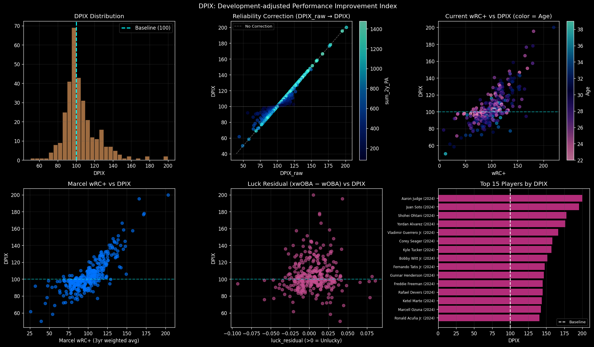
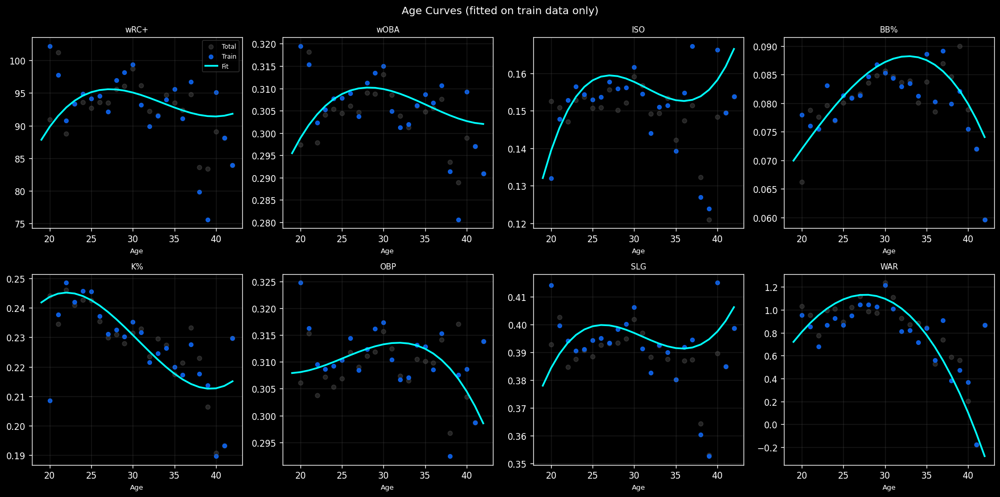
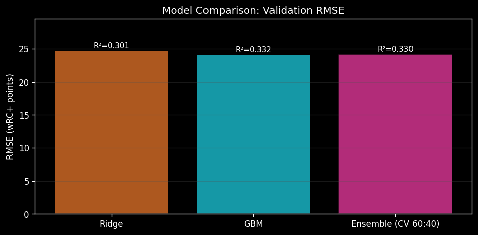
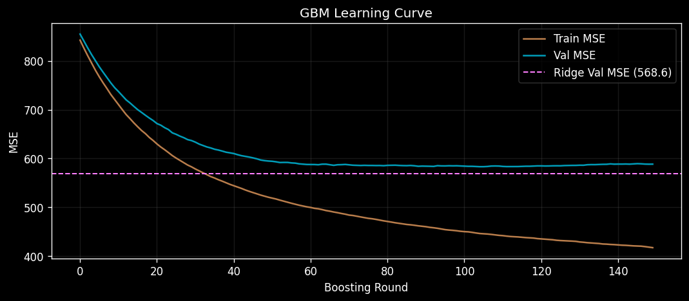
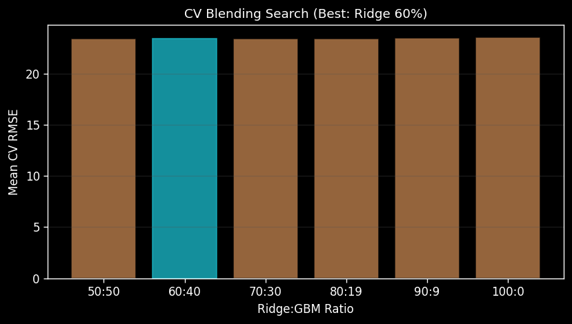

MLB Batter Analytics · 2024 Season
Development-adjusted Performance Improvement Index
FanGraphs 타자 데이터를 기반으로 선수의 다음 시즌 성과 향상 가능성을 100 기준(리그 평균)으로 수치화한 복합 지표이다. Marcel 가중평균, 나이 커브 보정, Ridge-GBM 앙상블, Statcast 기반 z-score 보정, 신뢰도 λ 가중치를 단계적으로 결합하여 산출한다.
DPIX는 단순 과거 성적 집계 지표가 아니다. 선수의 진정한 실력 추정치(True Talent)와 나이 발달 궤적, 통계적 행운/불운 보정, 샘플 신뢰도를 동시에 반영하는 예측 복합 지수이다.
과거 2년 타석 합산(sum_2y_PA)이 800 미만인 선수는 λ가 1 미만으로 계산되어 DPIX가 리그 평균(100)쪽으로 수렴한다. 소표본 선수의 극단값을 억제하는 핵심 설계이다.
당해 시즌 5, 전년 3, 2년 전 2의 비율로 가중 평균을 산출하여 True Talent를 추정한다. 데이터 부족 선수는 유효 가중치 합으로 정규화한다.
연령별 기대 성적을 cubic polynomial로 피팅하고 실제 성적과의 잔차를 wRC+_age_resid 피처로 활용한다. 모든 피팅은 학습 데이터(≤ 2023) 전용으로 수행된다.
xwOBA − wOBA의 차이를 luck_residual로 정의한다. 양수이면 타구 질 대비 성적이 저조한 불운, 음수이면 과운에 해당하며 DPIX 산출 시 보정 신호로 사용된다.
모든 통계량은 학습 데이터(Season ≤ 2023)에서만 산출되며, 검증·예측 데이터에는 단방향으로 적용된다. 데이터 누수(leakage)를 원천적으로 차단하는 설계 원칙을 엄격히 준수한다.
2020 시즌은 COVID-19로 인한 60경기 단축 시즌으로 전체 플래깅 처리하였다. 그 외 시즌은 출장 경기(G < 81) 또는 타석 수(PA < 250) 기준으로 부상 시즌을 판별한다.
전년도 부상 이력(prev_injury = 1)이 있는 선수에게는 bounce_bonus를 적용하여, 건강한 시즌으로의 회복 가능성을 DPIX에 반영한다.
xwOBA, Barrel%, HardHit%, EV 등 Statcast 지표를 학습 데이터 기준 z-score로 정규화하여 복합 점수를 산출한다. K%는 부호를 역전하여 z-score에 반영한다.
복합 z-score는 tanh 함수로 스쿼싱되어 DPIX 산출에 ±5% 범위 내에서 기여한다. 단일 Statcast 지표의 과도한 영향을 방지하는 설계이다.
학습 데이터에서 next_wRC+와 각 피처 간 피어슨 상관계수를 산출하고 정규화하여 DPIX 복합 지수의 초기 가중치로 사용한다.
최종 가중치는 상관계수 기반 가중치와 Ridge 계수 기반 가중치의 조화평균으로 결정된다. 두 관점을 결합하여 단순 상관관계의 한계를 보완한다.
train_cutoff = 2023으로 설정하여 학습·검증 데이터를 사전 분리한다. 나이 커브 피팅, 리그 평균 산출, 상관계수 계산, Ridge/GBM 학습은 모두 학습 데이터(Season ≤ 2023) 전용으로 수행된다.
검증 및 예측 데이터(2024, 2025)에는 학습된 변환을 단방향으로 적용하여 미래 정보가 모델에 유입되지 않도록 한다.
Ridge 회귀는 선형 관계에서 낮은 분산을 유지하고, GBM은 비선형 상호작용을 포착하여 단독으로 더 높은 R²를 달성한다. 앙상블은 TimeSeriesSplit CV로 결정된 최적 비율(Ridge 60% / GBM 40%)로 두 모델을 결합한다.
// CV RMSE by Ridge Weight (GBM = 1 - Ridge)
// GBM 하이퍼파라미터
야구 통계는 노이즈가 높은 도메인이므로 과적합 방지를 위해 의도적으로 보수적인 하이퍼파라미터를 적용하였다.
최종 가중치는 next_wRC+와의 피어슨 상관계수 기반 가중치와 Ridge 계수 기반 가중치의 조화평균으로 산출된다. 합산 시 가중치 합계는 1.0이 되도록 정규화된다.
타구 질 기반 기대 가중출루율의 3개년 Marcel 평균. 타자의 컨택 능력과 파워를 통합하는 핵심 지표이다.
구장 보정 타석당 득점 기여의 Marcel 평균. 리그 평균(100) 대비 상대적 타격 가치를 집약한다.
나이 커브 기대값 대비 wRC+ 잔차. 연령 발달 패턴을 초과하는 실제 성장·노화 신호를 포착한다.
타구 질의 정점 지표인 배럴 비율의 Marcel 평균. 장타력과 컨택 효율을 동시에 반영한다.
운·불운 보정 신호와 전년 대비 wRC+ 변화량. 독립 기여도는 낮으나 보정 역할에서 중요한 피처이다.
2024 시즌 대상 324명의 DPIX 산출 결과 전체를 제시한다. 열 헤더를 클릭하면 정렬이 가능하며, 선수명으로 검색할 수 있다. λ 값이 1 미만인 선수는 소표본 보정이 적용된 상태이다.
← 좌우로 스크롤하여 모든 열을 확인하세요 →
| # | 선수명 ↕ | 나이 ↕ | PA ↕ | wRC+ ↕ | WAR ↕ | luck_res ↕ | λ | DPIX ↓ |
|---|
연구 과정에서 생성된 주요 시각화 결과물이다. 이미지를 클릭하면 확대 보기가 가능하다.




